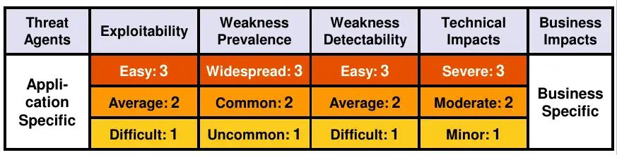
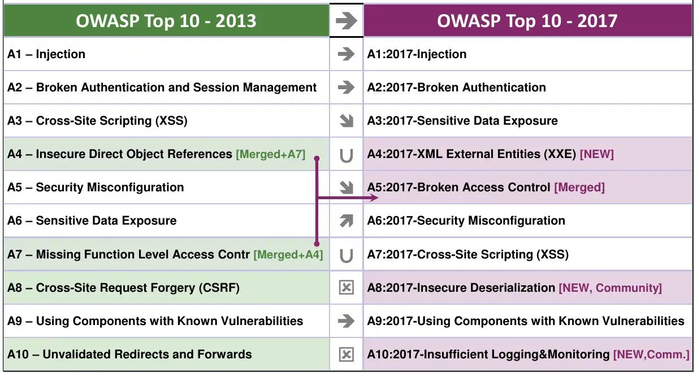

Security
OWASP Top 10
Open Web Application Security Project
- Offene Community
- Non-profit Organisation (unabhängig)
- Gremium
The Ten Most Critical Web Application Security Risks
OWASP Top 10
Wie werden die Sicherheitsrisiken ermittelt?
Risk Rating
- Wie leicht die Lücke auszunutzen ist (Exploitability)
- Wie verbreitet ist die Gefahr (Prevalence)
- Wie einfach sie zu entdecken ist (Weakness Detectability)
Berechnung Schadeneintrittswahrscheinlichkeit mit dem SchadenausmassOWASP Top 10 (Deutsch)
OWASP Top 10 (2017)
Injection
Injection
Was ist es?
Eine Injektionsanfälligkeit liegt vor, wenn ein Angreifer bösartige Daten als Teil eines Befehls oder einer Abfrage an einen Interpreter sendet.
Bei Erfolg wird diese böswillige Eingabe als Code ausgeführt, was den Interpreter veranlasst, unbeabsichtigte Befehle auszuführen oder Daten zu offenbaren, auf die sonst nicht zugegriffen werden könnte.
Injection
Eine Anwendung ist für diesen Angriff verwundbar, wenn:
- Daten, die vom Nutzer stammen, nicht ausreichend validiert, gefiltert oder durch geeignete Sanitizer-Funktionen laufen
- Nicht-parametrisierte Aufrufe (bspw. SQL, LDAP, XML usw.) ohne Escaping direkt einem Interpreter übergeben werden.
Injection
Wann tritt es auf?
Letztendlich resultiert die häufigste Ursache für Injektionsschwachstellen aus dem Versäumnis einer Website, die Eingaben eines Benutzers zu filtern, zu validieren oder zu säubern (Sanitazing).
Injection
Wann tritt es auf?

Injection
Wie kann es verhindert werden?
Nutzung von parametrisierten Queries
var id;
id = Request.form ("id");
var sql = "SELECT * FrOM OrdersTable WHERE id = '" + id + "'";
var id;
id = Request.form ("id");
SqlCommand command = ...;
command.CommandText = "SELECT * FrOM OrdersTable WHERE id = @Id;";
command.Parameters.Add("@Id", SqlDbType.UniqueIdentifier )
.Value = id;
Injection
Wie kann es verhindert werden?
Verwendung von ORM's (Object Relation Mapper) wie Entity Framework:
var blogs = db.Blogs
.Where(b => b.Rating > 3)
.OrderBy(b => b.Url)
.ToList();
Injection
Wie kann es verhindert werden?
- Blacklisting
- Whitelisting
- Encoding
- Escaping
- Sanitazing
Broken Authentication
Broken Authentication
Was ist es?
Alle Schwächen in der Authentifizierung und beim Session Management.
Wenn diese in Webanwendungen schlecht implementiert sind, erhalten Angreifer Zugriff auf Konten und/oder Daten, die sie sonst nicht einsehen dürften.
Broken Authentication
Wann tritt es auf?
- Automatisierte Angriffe (Brute-Force, Credential Stuffing usw.)
- Seiten die Benutzern erlauben, schwache oder bekannte Passwörter wie password123 zu verwenden.
- Unveränderte Standardpasswörter
- Unveränderte Standardpasswörter
- Funktionen um Zugangsdaten oder Passwörter wiederherzustellen sind schwach
- Speicherung von Passwörtern im Klartext, verschlüsselt oder mit schwachen Hashes
- Funktionen um Zugangsdaten oder Passwörter wiederherzustellen sind schwach
- Session ID exponiert (z. Bsp. in URL)
Broken Authentication
Wie kann es verhindert werden?
- Multifaktor-Authentication
- Keine Standardbenutzer
- Es sollten Prüfungen zum Verhindern schwacher Passwörter implementiert sein.
- Die Prüfung der Länge, Komplexität und Häufigkeit des Passwortwechsels.
- Automatische Durchsuchen nach gültigen Benutzernamen sollte nicht möglich sein.
- Begrenzen der Gesamtanzahl der Anmeldeversuche oder setze Verzögerungen (Timeouts) ein.
- Passwörter nie in Plain-Text speichern. Salt und Pepper verwenden.
- Es sollten serverseitige, sichere und etablierte SessionManager verwendet werden
- SessionStorage verwenden, Validtime von JW-Tokens begrenzen
Sensitive Data Exposure
Sensitive Data Exposure
Was ist es?
Schwachstelle, wenn eine Webanwendung sensible Daten nicht ausreichend schützt.
Dazu gehören z.Bsp. E-Mail-Adressen, Postadressen, Bankinformationen, Geburtsdaten und Telefonnummern.
Sensitive Data Exposure
Wann tritt es auf?
- Die Daten werden im Klartext übertragen (über Protokolle wie HTTP, FTP und SMTP).
- Sensible Daten werden serverseitig im Klartext gespeichert.
- Keine oder schwache Encryption (MD5 or SHA-1)
Sesitive Data Exposure
Wie kann es verhindert werden?
- Schützenswerte Daten definieren.
- Kein unnötiges Speichern vertraulicher Daten.
- Verschlüsseltes Speichern von sensitiven Daten.
- Aktuelle, starke Algorithmen und Schlüssel verwenden
- Nie einen eigenen Verschlüsselungs-Mechanismus implementieren.
- Unabhängige Überprüfung der Wirksamkeit der Einstellungen.